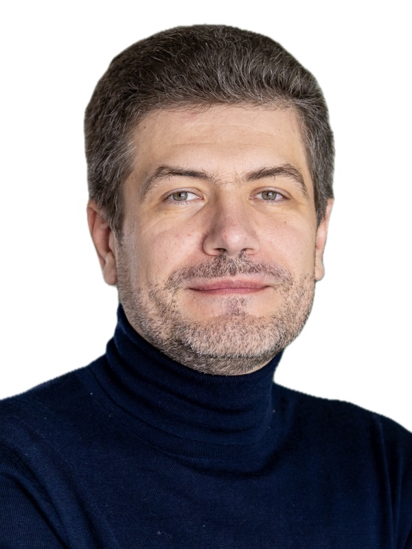

Summary

LinkedIn:
https://www.linkedin.com/in/rodchenko/
GitHub:
https://github.com/arodchen
Google Scholar:
https://scholar.google.com/citations?user=dzOL9kUAAAAJ
ResearchGate:
https://www.researchgate.net/profile/Andrey_Rodchenko
Andrey was a PhD student in the School of Computer Science at the University of Manchester . He was a member of the APT group July 2013 - June 2017, supervised by Mikel Luján and Antoniu Pop. During his PhD, Andrey researched scalable synchronization algorithms on cache coherent many-core systems and opportunities for HW/SW co-design and co-specialisation of Java VMs and general-purpose CPUs. His research interests are compilers, binary translation, runtime systems, computer architecture, and HW/SW co-design.
Publications
Software/Hardware Co-Design and Co-Specialisation: Novel Simulation Techniques and Optimisations.
Andrey Rodchenko.
PhD Thesis, The University of Manchester, Aug 2018
[thesis]
Type Information Elimination from Objects on Architectures with Tagged Pointers Support.
Andrey Rodchenko, Christos Kotselidis, Andy Nisbet, Antoniu Pop, Mikel Luján.
IEEE Transactions on Computers (Early Access), June 2017
[paper]
MaxSim: A Simulation Platform For Managed Applications.
Andrey Rodchenko, Christos Kotselidis, Andy Nisbet, Antoniu Pop, Mikel Luján.
In Proceedings of the 2017 IEEE International Symposium on Performance Analysis of Systems and Software (ISPASS), San Francisco Bay Area, California, USA, April 2017
(Best Paper Award)
.
[paper]
[slides]
[artifact]
Heterogeneous Managed Runtime Systems: A Computer Vision Case Study.
Christos Kotselidis, James Clarkson, Andrey Rodchenko, Andy Nisbet, John Mawer, Mikel Luján.
In Proceedings of the 13th ACM SIGPLAN/SIGOPS International Conference on Virtual Execution Environments (VEE), Xi’an, China, April 2017.
[paper]
[slides]
Project Beehive: A Hardware/Software Co-designed Stack for Runtime and Architectural Research.
Christos Kotselidis, Andrey Rodchenko, Colin Barrett, Andy Nisbet, John Mawer, Will Toms, James Clarkson, Cosmin Gorgovan, Amanieu d’Antras,
Yaman Cakmakci, Thanos Stratikopoulos, Sebatian Werner, Jim Garside, Javier Navaridas, Antoniu Pop, John Goodacre, Mikel Luján
In Proceedings of the 10th International Workshop on Programmability and Architectures for Heterogeneous Multicores (MULTIPROG), Vienna, Austria, January 2016.
[paper]
Effective Barrier Synchronization on Intel Xeon Phi Coprocessor.
Andrey Rodchenko, Andy Nisbet, Antoniu Pop, Mikel Luján.
In Proceedings of the 21st International Conference on Parallel and Distributed Computing (Euro-Par), Vienna, Austria, August 2015.
[paper]
[slides]
[artifact]
Software
MaxSim
- a simulation platform for managed applications based on Maxine VM and ZSim.
Andrey developed this platform in 2015-2017 to do HW/SW co-design research and characterization of managed workloads.
cbarriers
- a framework for evaluating different barrier synchronization algorithms.
Andrey devloped this framework in 2013-2015 to evaluate hybrid barrier with other known barrier synchronization algorithms.
Maxine VM
- a meta-circular research VM.
Andrey was an active contributor to this project in 2014-2017. Specifically, he improved utilization of the Graal optimising compiler by the Maxine VM resulting in 1.64x speedup on the DaCapo benchmarks and better overall stability.